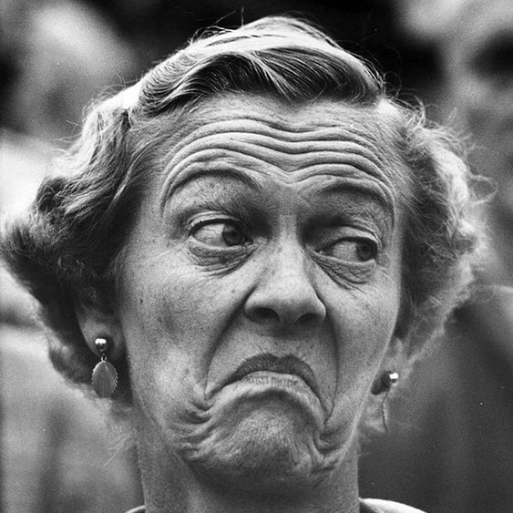

Sorridere è forse uno dei segnali più importanti del linguaggio del corpo, ma i sorrisi possono anche essere interpretati in molti modi.
I gesti della bocca esprimono varie emozioni e intenzioni non verbali, come il sorriso (gioia, approvazione o sarcasmo), il sorriso a labbra strette (disagio ma cortesia), mordersi il labbro inferiore (insicurezza o preoccupazione), coprire la bocca (nascondere una reazione) o mostrare la lingua (giocosità o seduzione).